One of my valuable experiences was working at BRI for six months. During the internship, I worked on several projects, including an Early Warning System (EWS) to monitor customers at risk of declining credit quality and support risk mitigation.
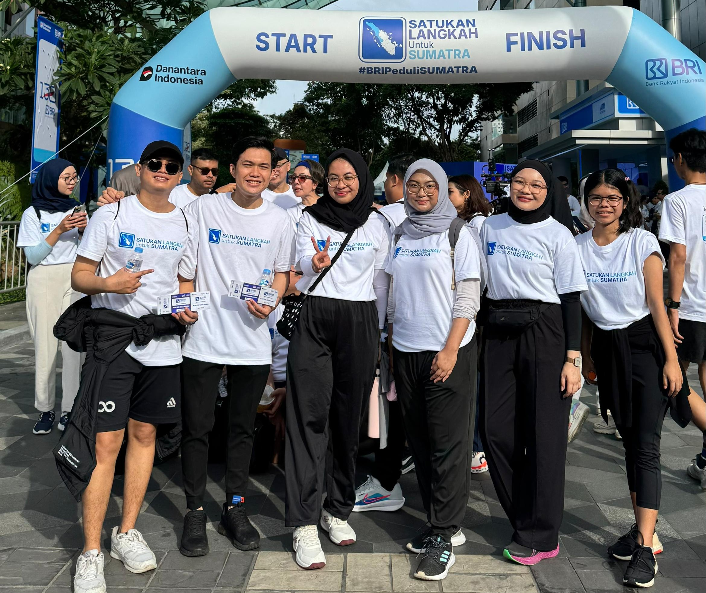
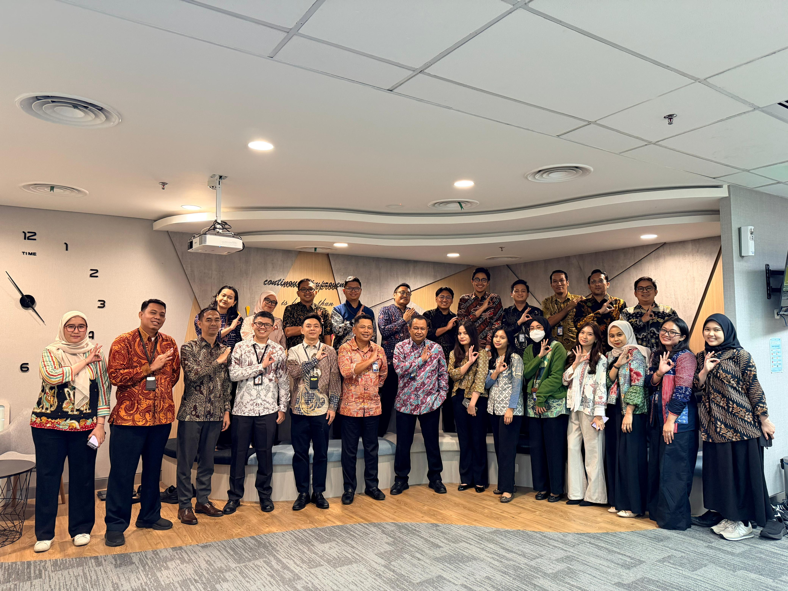
Being a Mathematics tutor at PMUI Tutoring Center was a very rewarding experience for me. There, I taught students online from various regions across Indonesia, ranging from elementary school level to university entrance preparation programs.
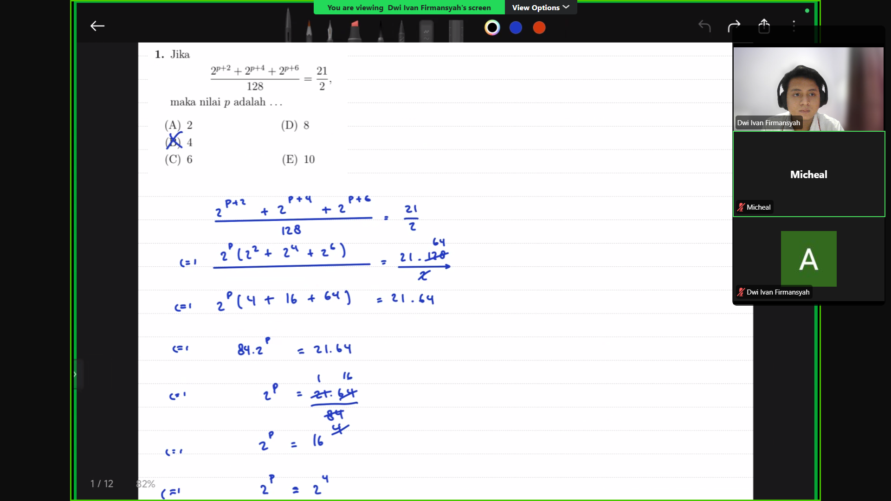
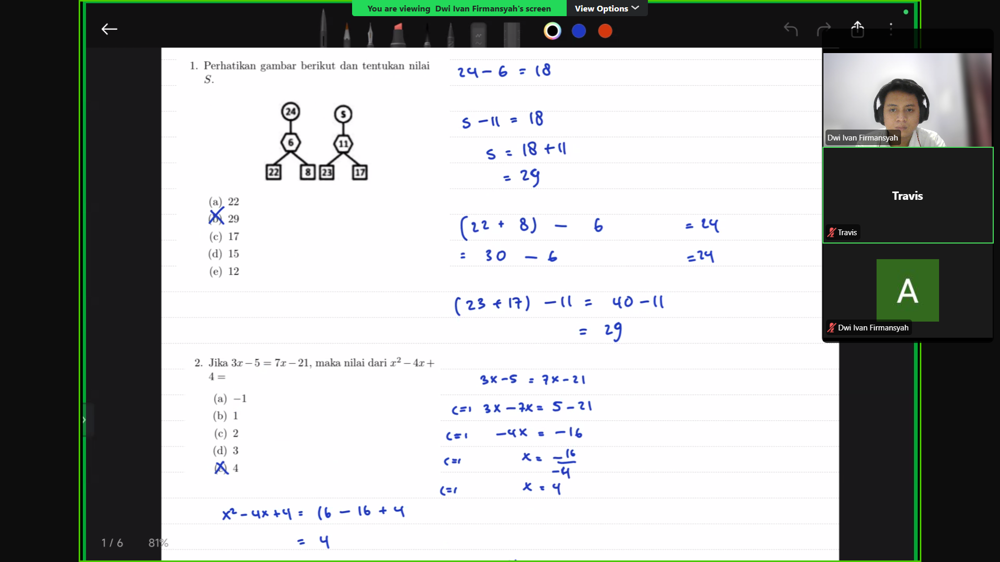
My first part-time experience was as a Mathematics Tutor. At Smart Educafe, I focused on teaching high school students in Yogyakarta and preparing them for university entrance examinations at public universities (PTN).
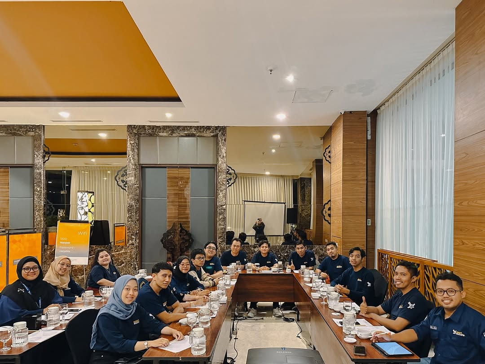
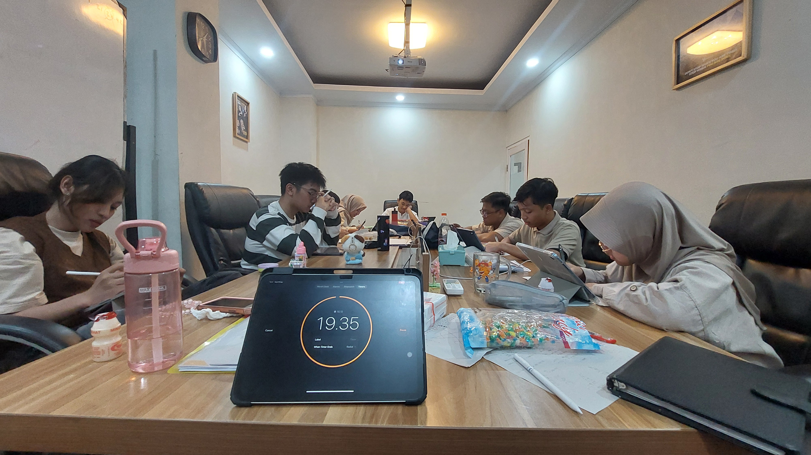
Participating in Bangkit Academy was a valuable experience for me. Through this program, I developed skills in data analysis, programming, and problem-solving through project-based learning and collaboration with participants from diverse backgrounds.
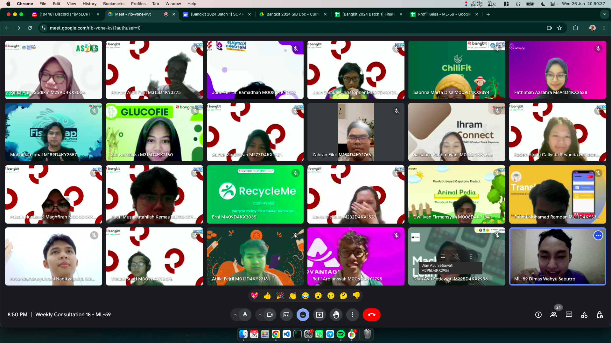
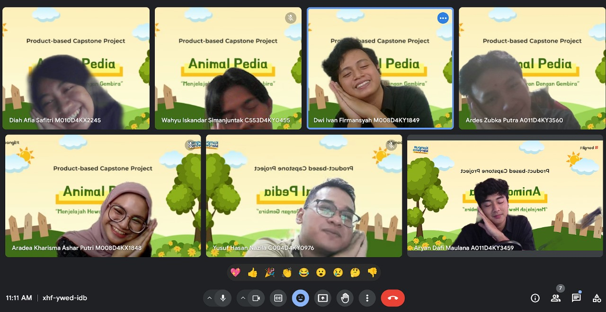
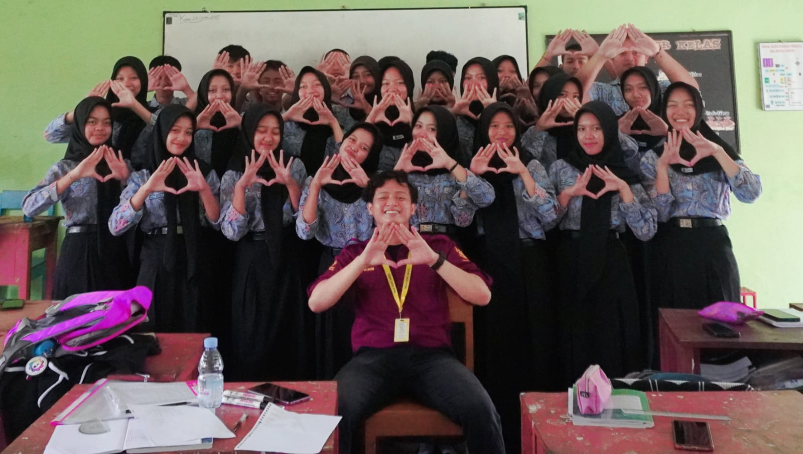
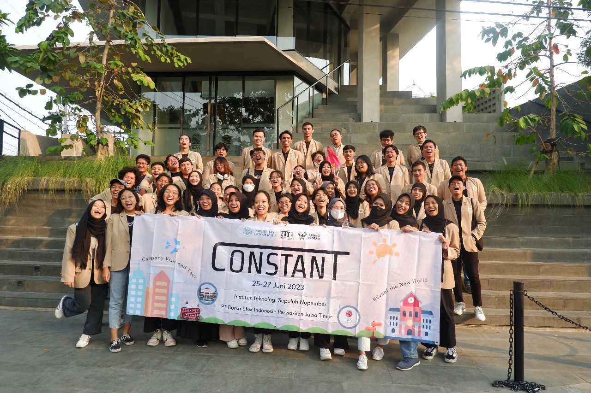
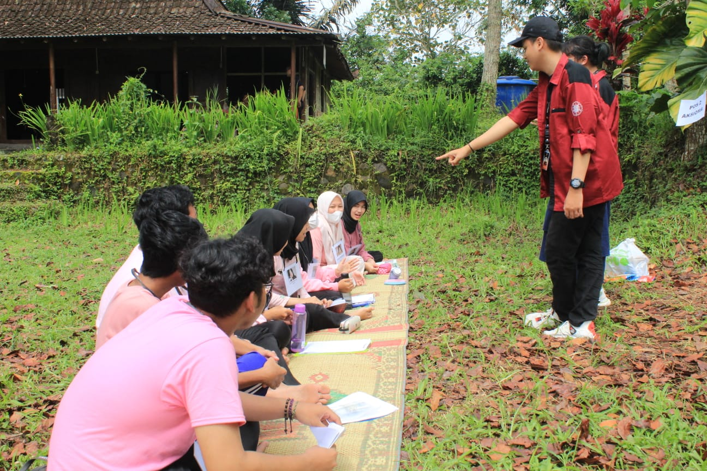
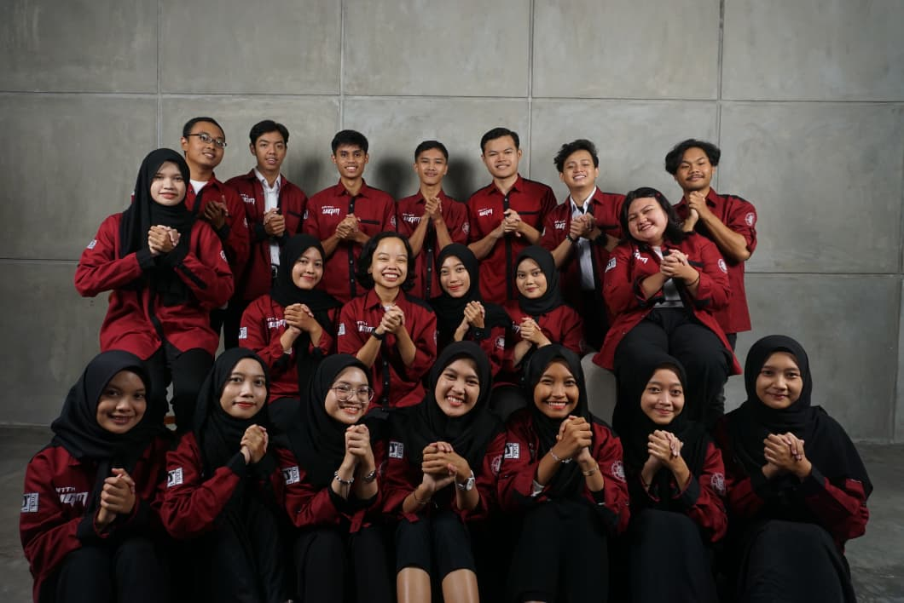
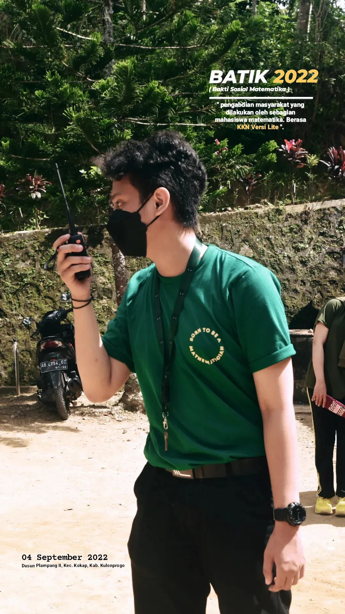